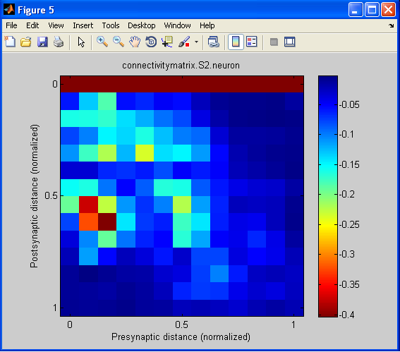
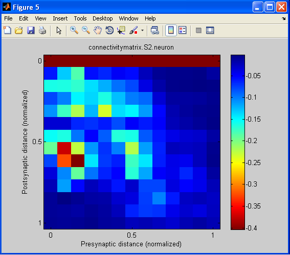

This is the model for the associated paper:
PLoS Biol. 2011 Jan 4;9(1):e1000572. Laminar analysis of excitatory
local circuits in vibrissal motor and sensory cortical areas. Hooks
BM, Hires SA, Zhang YX, Huber D, Petreanu L, Svoboda K, Shepherd GM.
Model is the excitatory->excitatory circuit of three cortical areas
(vM1, vS1, and S2) presented on a neuron or laminar basis (six
matrices).
The M-file is a text file from the supplemental info (S1), which is
simply the values used for the connectivity matrices of figure 7 (if
you run the M-file in matlab, it plots them as well as importing them
as variables).
Usage: start matlab and then type mhconmatvalues20100928 at the
command line. This will reproduce panels b, c, e, f, h, and i in
Figure 7 of the associated paper:
7b:  7c:
7e:
7f:
7h: 
7i:
An octave (free version of matlab) version,
mhconmatvalues20100928_octave.m, is also supplied by the ModelDB
Administrator.
A related model for somatic M1, mapped in comparable fashion in Weiler
et al (2008), is available at:
http://senselab.med.yale.edu/ModelDB/ShowModel.asp?model=114655
7c:
7e:
7f:
7h: 
7i:
An octave (free version of matlab) version,
mhconmatvalues20100928_octave.m, is also supplied by the ModelDB
Administrator.
A related model for somatic M1, mapped in comparable fashion in Weiler
et al (2008), is available at:
http://senselab.med.yale.edu/ModelDB/ShowModel.asp?model=114655